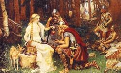

Ідунн ("оновлююча"), у скандинавській міфології богиня-берегиня чудесних молодильні яблук. Її чоловіком був син Одіна, бог красномовства Браги. Чарівну яблуню плекали і охороняли три мудрі норни. Тільки богині весни Ідунн дозволяли вони збирати чудові плоди. Зі свого невичерпного скриньки Ідунн роздавала золоті яблука, завдяки яким боги зберігали вічну молодість.
Ці дорогоцінні дари хотіли викрасти велетні, які хотіли позбавити богів їх сили і юності. Одного разу бог вогню Локі потрапив в полон до велетня тьяцці, і в обмін на свободу пообіцяв вкрасти у Ідунн золоті яблука.
Повернувшись в Асгард, Локі розповів Ідунн про яблука, що нібито мали ще більш чудодійні властивості і знайдених ним неподалік. Довірлива богиня вирушила з ним у ліс, де в образі орла її чекав тьяцці. Кігтистими лапами він схопив Ідунн разом з її яблуками і забрав в Етунхейм, землю велетнів. Втрата яблук відразу зістарила богів, очі їх затуманились, шкіра стала в'ялою, розум ослаб. Над Асгардом нависла загроза смерті.
Зрештою Один зібрав залишки сил і знайшов Локі. Погрожуючи йому смертю, він наказав зрадникові негайно повернути Ідунн і чудові яблука. Локі, обернувшись соколом, полетів у володіння тьяцці, перетворив Ідунн в горіх і повернувся з нею додому. Велетень в образі орла пустився слідом за ними і спробував наздогнати втікачів, але, перелітаючи через високі стіни Асгарда, згорів у полум'ї розведених на стінах багать і перетворився в жменьку попелу. Локі повернув Ідунн її справжній вигляд, і вона роздала хворим богам яблука. Легенди про золотих яблуках, символі молодості і плодючості, відомі в грецькій міфології (яблука Гесперид).